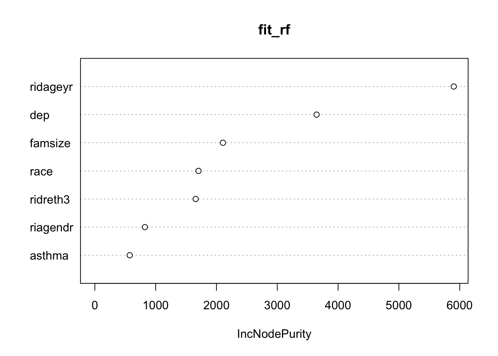

Chapter 7: Other Modeling Techniques
“Simplicity is the ultimate sophistication.” — Leonardo da Vinci
In this chapter we cover, however briefly, modeling techniques that are especially useful to make complex relationships easier to interpret. We will focus on mediation and moderation modeling, methods relating to structural equation modeling (SEM), and methods applicable to our field from machine learning. Although these machine learning may appear very different than mediation and SEM, they each have advantages that can help in different situations. For example, SEM is useful when we know there is a high degree of measurement error or our data has multiple indicators for each construct. On the other hand, regularized regression and random forests–two popular forms of machine learning–are great to explore patterns and relationships there are hundreds or thousands of variables that may predict an outcome.
Mediation modeling, although often used within SEM, can help us understand pathways of effect from one variable to another. It is especially useful with moderating variables (i.e., variables that interact with another).
So we’ll start with discussing mediation, then we’ll move on to SEM, followed by machine learning techniques.
Mediation Modeling
Mediation modeling can be done via several packages. For now, we recommend using either lavaan (stands for “latent variable analysis”)20 or MarginalMediation (written by the author of this book). Although both are technically still “beta” versions, they both perform very well especially for more simple models. It makes mediation modeling straightforward.
Below, we model the following mediation model: \[ depression = \beta_0 + \beta_1 asthma + \epsilon_1 \]
\[ time_{Sedentary} = \lambda_0 + \lambda_1 asthma + \lambda_2 depression + \epsilon_2 \]
In essence, we believe that asthma increases depression which in turn increases the amount of time spent being sedentary. To run this with MarginalMediation, we will use two distinct regression models (see Chapter 4) and combine them with mma(). The object pathbc is the model with sedentary behavior as the outcome and patha is the path leading to the mediator.
library(MarginalMediation)
df$sed_hr = df$sed/60 ## in hours instead of minutes
pathbc <- glm(sed_hr ~ dep + asthma, data = df)
patha <- glm(dep ~ asthma, data = df)
mma(pathbc, patha,
ind_effects = c("asthmaAsthma-dep"))##
## calculating a paths... b and c paths... Done.
## ┌───────────────────────────────┐
## │ Marginal Mediation Analysis │
## └───────────────────────────────┘
## A marginal mediation model with:
## 1 mediators
## 1 indirect effects
## 1 direct effects
## 500 bootstrapped samples
## 95% confidence interval
## n = 4632
##
## Formulas:
## ◌ sed_hr ~ dep + asthma
## ◌ dep ~ asthma
##
## Regression Models:
##
## sed_hr ~
## Est SE Est/SE P-Value
## (Intercept) 5.88575 0.06262 93.986 0.00000
## dep 0.04367 0.01112 3.927 0.00009
## asthmaAsthma 0.41230 0.13908 2.965 0.00305
##
## dep ~
## Est SE Est/SE P-Value
## (Intercept) 2.948 0.07059 41.764 0
## asthmaAsthma 1.459 0.18250 7.993 0
##
## Unstandardized Mediated Effects:
##
## Indirect Effects:
##
## sed_hr ~
## Indirect Lower Upper
## asthmaAsthma => dep 0.0637 0.02842 0.109
##
## Direct Effects:
##
## sed_hr ~
## Direct Lower Upper
## asthmaAsthma 0.4123 0.1593 0.711
##
##
## Standardized Mediated Effects:
##
## Indirect Effects:
##
## sed_hr ~
## Indirect Lower Upper
## asthmaAsthma => dep 0.019 0.00848 0.03251
##
## Direct Effects:
##
## sed_hr ~
## Direct Lower Upper
## asthmaAsthma 0.123 0.04753 0.2121This gives us the estimates of the individual regression models and the estimates of the indirect and direct effects.
To do the exact same model with lavaan, we can do the following:
library(lavaan)
## Our model
model1 <- '
dep ~ asthma
sed_hr ~ dep + asthma
'
## sem function to run the model
fit <- sem(model1, data = df)
summary(fit)## lavaan 0.6-3 ended normally after 30 iterations
##
## Optimization method NLMINB
## Number of free parameters 5
##
## Used Total
## Number of observations 4614 4632
##
## Estimator ML
## Model Fit Test Statistic 0.000
## Degrees of freedom 0
##
## Parameter Estimates:
##
## Information Expected
## Information saturated (h1) model Structured
## Standard Errors Standard
##
## Regressions:
## Estimate Std.Err z-value P(>|z|)
## dep ~
## asthma 1.478 0.183 8.084 0.000
## sed_hr ~
## dep 0.044 0.011 3.929 0.000
## asthma 0.412 0.139 2.965 0.003
##
## Variances:
## Estimate Std.Err z-value P(>|z|)
## .dep 19.597 0.408 48.031 0.000
## .sed_hr 11.171 0.233 48.031 0.000From the output we see asthma does predict depression and depression does predict time being sedentary. There is also a direct effect of asthma on sedentary behavior even after controlling for depression. We can further specify the model to have it give us the indirect effect and direct effects tested.
## Our model
model2 <- '
dep ~ a*asthma
sed_hr ~ b*dep + c*asthma
indirect := a*b
total := c + a*b
'
## sem function to run the model
fit2 <- sem(model2, data = df)
summary(fit2)## lavaan 0.6-3 ended normally after 30 iterations
##
## Optimization method NLMINB
## Number of free parameters 5
##
## Used Total
## Number of observations 4614 4632
##
## Estimator ML
## Model Fit Test Statistic 0.000
## Degrees of freedom 0
##
## Parameter Estimates:
##
## Information Expected
## Information saturated (h1) model Structured
## Standard Errors Standard
##
## Regressions:
## Estimate Std.Err z-value P(>|z|)
## dep ~
## asthma (a) 1.478 0.183 8.084 0.000
## sed_hr ~
## dep (b) 0.044 0.011 3.929 0.000
## asthma (c) 0.412 0.139 2.965 0.003
##
## Variances:
## Estimate Std.Err z-value P(>|z|)
## .dep 19.597 0.408 48.031 0.000
## .sed_hr 11.171 0.233 48.031 0.000
##
## Defined Parameters:
## Estimate Std.Err z-value P(>|z|)
## indirect 0.065 0.018 3.534 0.000
## total 0.477 0.138 3.448 0.001We defined a few things in the model. First, we gave the coefficients labels of a, b, and c. Doing so allows us to define the indirect and total effects. Here we see the indirect effect, although small, is significant at \(p < .001\). The total effect is larger (not surprising) and is also significant.
Also note that we can make the regression equations have other covariates as well if we needed to (i.e. control for age or gender) just as we do in regular regression.
## Our model
model2.1 <- '
dep ~ asthma + ridageyr
sed_hr ~ dep + asthma + ridageyr
'
## sem function to run the model
fit2.1 <- sem(model2.1, data = df)
summary(fit2.1)## lavaan 0.6-3 ended normally after 33 iterations
##
## Optimization method NLMINB
## Number of free parameters 7
##
## Used Total
## Number of observations 4614 4632
##
## Estimator ML
## Model Fit Test Statistic 0.000
## Degrees of freedom 0
## Minimum Function Value 0.0000000000000
##
## Parameter Estimates:
##
## Information Expected
## Information saturated (h1) model Structured
## Standard Errors Standard
##
## Regressions:
## Estimate Std.Err z-value P(>|z|)
## dep ~
## asthma 1.462 0.183 7.980 0.000
## ridageyr -0.005 0.004 -1.330 0.183
## sed_hr ~
## dep 0.044 0.011 3.927 0.000
## asthma 0.412 0.139 2.956 0.003
## ridageyr -0.000 0.003 -0.063 0.950
##
## Variances:
## Estimate Std.Err z-value P(>|z|)
## .dep 19.590 0.408 48.031 0.000
## .sed_hr 11.171 0.233 48.031 0.000Although we don’t show it here, we can also do moderation (“interactions”) as part of the mediation model (especially using the MarginalMediation package).
Structural Equation Modeling
Instead of summing our depression variable, we can use SEM to run the mediation model from above but use the latent variable of depression instead.
## Our model
model3 <- '
dep1 =~ dpq010 + dpq020 + dpq030 + dpq040 + dpq050 + dpq060 + dpq070 + dpq080 + dpq090
dep1 ~ a*asthma
sed_hr ~ b*dep1 + c*asthma
indirect := a*b
total := c + a*b
'
## sem function to run the model
fit3 <- sem(model3, data = df)
summary(fit3)## lavaan 0.6-3 ended normally after 47 iterations
##
## Optimization method NLMINB
## Number of free parameters 22
##
## Used Total
## Number of observations 4614 4632
##
## Estimator ML
## Model Fit Test Statistic 1065.848
## Degrees of freedom 43
## P-value (Chi-square) 0.000
##
## Parameter Estimates:
##
## Information Expected
## Information saturated (h1) model Structured
## Standard Errors Standard
##
## Latent Variables:
## Estimate Std.Err z-value P(>|z|)
## dep1 =~
## dpq010 1.000
## dpq020 1.096 0.024 45.136 0.000
## dpq030 1.133 0.031 36.908 0.000
## dpq040 1.149 0.030 38.066 0.000
## dpq050 0.933 0.025 36.773 0.000
## dpq060 0.929 0.022 42.107 0.000
## dpq070 0.871 0.022 39.760 0.000
## dpq080 0.686 0.019 36.325 0.000
## dpq090 0.308 0.011 28.544 0.000
##
## Regressions:
## Estimate Std.Err z-value P(>|z|)
## dep1 ~
## asthma (a) 0.173 0.023 7.656 0.000
## sed_hr ~
## dep1 (b) 0.342 0.105 3.275 0.001
## asthma (c) 0.418 0.139 2.998 0.003
##
## Variances:
## Estimate Std.Err z-value P(>|z|)
## .dpq010 0.306 0.007 42.008 0.000
## .dpq020 0.212 0.006 37.549 0.000
## .dpq030 0.559 0.013 43.807 0.000
## .dpq040 0.514 0.012 43.302 0.000
## .dpq050 0.384 0.009 43.862 0.000
## .dpq060 0.221 0.005 40.808 0.000
## .dpq070 0.249 0.006 42.420 0.000
## .dpq080 0.217 0.005 44.038 0.000
## .dpq090 0.090 0.002 46.106 0.000
## .sed_hr 11.179 0.233 48.012 0.000
## .dep1 0.256 0.010 24.657 0.000
##
## Defined Parameters:
## Estimate Std.Err z-value P(>|z|)
## indirect 0.059 0.020 3.019 0.003
## total 0.477 0.138 3.448 0.001We defined dep1 as a latent variable using =~. Although the model does not fit the data well–“P-value (Chi-square) = 0.000”–it is informative for demonstration. We would likely need to find out how the measurement model (dep1 =~ dpq010 + dpq020 + dpq030 +) actually fits before throwing it into a mediation model. We can do that via:
model4 <- '
dep1 =~ dpq010 + dpq020 + dpq030 + dpq040 + dpq050 + dpq060 + dpq070 + dpq080 + dpq090
'
fit4 <- cfa(model4, data=df)
summary(fit4)## lavaan 0.6-3 ended normally after 29 iterations
##
## Optimization method NLMINB
## Number of free parameters 18
##
## Number of observations 4632
##
## Estimator ML
## Model Fit Test Statistic 985.831
## Degrees of freedom 27
## P-value (Chi-square) 0.000
##
## Parameter Estimates:
##
## Information Expected
## Information saturated (h1) model Structured
## Standard Errors Standard
##
## Latent Variables:
## Estimate Std.Err z-value P(>|z|)
## dep1 =~
## dpq010 1.000
## dpq020 1.097 0.024 45.383 0.000
## dpq030 1.128 0.031 36.962 0.000
## dpq040 1.145 0.030 38.136 0.000
## dpq050 0.927 0.025 36.630 0.000
## dpq060 0.930 0.022 42.294 0.000
## dpq070 0.870 0.022 39.941 0.000
## dpq080 0.681 0.019 36.350 0.000
## dpq090 0.307 0.011 28.609 0.000
##
## Variances:
## Estimate Std.Err z-value P(>|z|)
## .dpq010 0.306 0.007 42.051 0.000
## .dpq020 0.211 0.006 37.470 0.000
## .dpq030 0.560 0.013 43.909 0.000
## .dpq040 0.515 0.012 43.400 0.000
## .dpq050 0.390 0.009 44.041 0.000
## .dpq060 0.221 0.005 40.835 0.000
## .dpq070 0.249 0.006 42.461 0.000
## .dpq080 0.216 0.005 44.149 0.000
## .dpq090 0.090 0.002 46.195 0.000
## dep1 0.261 0.011 24.765 0.000As we can see, there is a lack of fit in the measurement model. It is possible that these depression questions could be measuring more than one factor. We could explore this using exploratory factor analysis. We don’t demonstrate that here, but know that it is possible to do in R with a few other packages.
Machine Learning Techniques
We are briefly going to introduce some machine learning techniques that may be of interest to researchers. We will quickly introduce and demonstrate:
- Ridge, Lasso and Elastic Net
- Random Forests
In order to use these methods, we can use the fantastic caret package. It allows us to do nearly any type of machine learning technique. It is a type of package that takes many other packages and gives us a simple syntax across all the methods.
Ridge, Lasso and Elastic Net
Lasso and elastic net can do variable selection in addition to estimation. Ridge is great at handling correlated predictors. Each of them are better than conventional methods at prediction and each of them can handle large numbers of predictors. To learn more see “Introduction to Statistical Learning” by Daniela Witten, Gareth James, Robert Tibshirani, and Trevor Hastie. A free PDF is available on their website.
To use the package, it wants the data in a very specific form. First, we need to remove any missingness. We use na.omit() to do this. We take all the predictors (without the outcome) and put it in a data matrix object. We only include a few for the demonstration but you can include many predictors. We name ours X. Y is our outcome.
df2 <- df %>%
dplyr::select(riagendr, ridageyr, ridreth3, race, famsize, dep, asthma, sed_hr) %>%
na.omitThen we use the train() function to fit the different models. This function, by default, uses cross-validation21, which we don’t discuss here, but it an important topic to become familiar with. Below we fit a model that is either a ridge, a lasso, or an elastic net model depending on the alpha level. This is done using the method = "glmnet" argument. We specify the model by the formula sed_hr ~ . which means we want sed_hr to be the outcome and all the rest of the variables to be predictors.
library(caret)
## Use 10-fold cross validation
fitControl <- trainControl(method = "cv",
number = 10)
## Run the model
fit <- train(sed_hr ~ .,
method = "glmnet",
data = df2,
trControl = fitControl)
fit## glmnet
##
## 4437 samples
## 7 predictor
##
## No pre-processing
## Resampling: Cross-Validated (10 fold)
## Summary of sample sizes: 3993, 3992, 3995, 3993, 3994, 3992, ...
## Resampling results across tuning parameters:
##
## alpha lambda RMSE Rsquared MAE
## 0.10 0.0008293 3.282 0.04440 2.690
## 0.10 0.0082933 3.282 0.04432 2.691
## 0.10 0.0829328 3.283 0.04396 2.694
## 0.55 0.0008293 3.282 0.04436 2.690
## 0.55 0.0082933 3.283 0.04391 2.692
## 0.55 0.0829328 3.286 0.04311 2.700
## 1.00 0.0008293 3.282 0.04441 2.690
## 1.00 0.0082933 3.283 0.04399 2.693
## 1.00 0.0829328 3.292 0.04181 2.707
##
## RMSE was used to select the optimal model using the smallest value.
## The final values used for the model were alpha = 1 and lambda = 0.0008293.With this model, we can assess the most important predictors of sedentary behavior. We can do that with:
varImp(fit)## glmnet variable importance
##
## Overall
## raceOther 100.000
## raceWhite 95.553
## raceBlack 92.974
## raceOtherHispanic 30.979
## asthmaAsthma 14.747
## riagendr 6.608
## famsize 6.158
## dep 1.858
## ridreth3 0.414
## ridageyr 0.000This shows us that, of these variables, race was most important, followed by asthma. Importantly, though, this model did not predict the outcome very well so these are likely not very important predictors overall.
Random Forests
Random forests is another machine learning method that can do fantastic prediction. It is built in a very different way than the methods we have discussed up to this point. It is not built on a linear modeling scheme; rather, it is built on classification and regression trees (CART). Again, “Introduction to Statistical Learning” is a great resource to learn more.
Conveniently, we can use the randomForest package. (We can also use the caret package here.) We specify the model by the formula sed_hr ~ . just like before, which means we want sed_hr to be the outcome and all the rest of the variables to be predictors.
library(randomForest)## randomForest 4.6-14## Type rfNews() to see new features/changes/bug fixes.##
## Attaching package: 'randomForest'## The following object is masked from 'package:dplyr':
##
## combine## The following object is masked from 'package:ggplot2':
##
## marginfit_rf <- randomForest(sed_hr ~ ., data = df2)
fit_rf##
## Call:
## randomForest(formula = sed_hr ~ ., data = df2)
## Type of random forest: regression
## Number of trees: 500
## No. of variables tried at each split: 2
##
## Mean of squared residuals: 10.81
## % Var explained: 3.78We can find out which variables were important in the model via:
par(mfrow=c(1,1)) ## back to one plot per page
varImpPlot(fit_rf)
We can see that age (ridageyr) is the most important variable, depression (dep) follows, with the family size (famsize) the third most important in the random forests model.
Apply It
This link contains a folder complete with an Rstudio project file, an RMarkdown file, and a few data files. Download it and unzip it to do the following steps.
Step 1
Open the Chapter4.Rproj file. This will open up RStudio for you.
Step 2
Once RStudio has started, in the panel on the lower-right, there is a Files tab. Click on that to see the project folder. You should see the data files and the Chapter4.Rmd file. Click on the Chapter4.Rmd file to open it. In this file, import the data and run each type of statistical analysis presented in this chapter (there are others that are presented in Chapters 4, 5, and 6 that you may have done already).
Once that code is in the file, click the knit button. This will create an HTML file with the code and output knitted together into one nice document. This can be read into any browser and can be used to show your work in a clean document.
Conclusions
Although we only discussed these methods briefly, that does not mean they are less important. On the contrary, they are essential upper level statistical methods. This brief introduction hopefully helped you know what R is capable of across a wide range of methods.
The next chapter begins our “advanced” topics, starting with “Advanced Data Manipulation”.
The
lavaanpackage has some great vignettes at http://lavaan.ugent.be/ to help with the other types of models it can handle.↩Cross-validation is a common way to reduce over-fitting and make sure your model is generalizable. Generally, you split your data into training and testing sets. It is very common in machine learning and is beginning to be practiced in academic fields as well. We recommend using it as often as you can, especially with these methods but also to make sure your other models are accurate on new data as well.↩